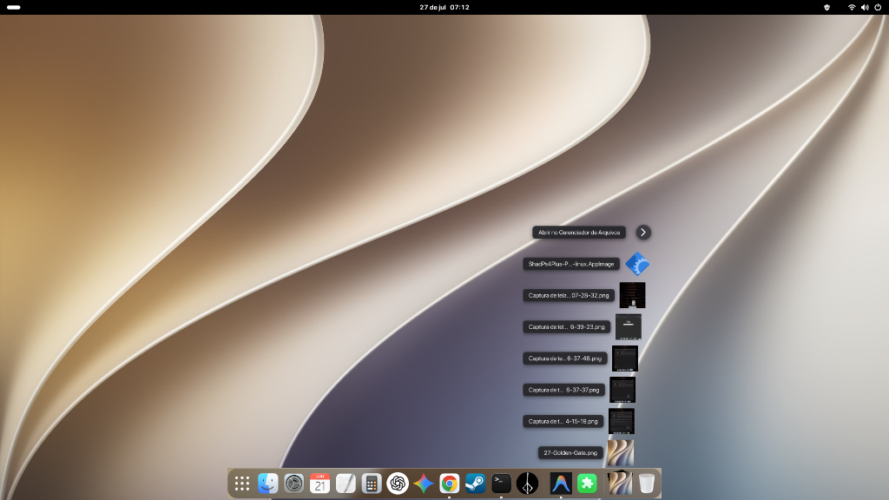

Built from the ground up for GNOME Shell 50. Featuring pixel-perfect liquid glass blur, smooth cursor magnification, Finder Stacks (Fan, Grid, List), and genie minimize effects.

Every visual dimension—padding, corner radius, indicator offset, and liquid glass tint—was measured from real macOS Tahoe captures.
Genuine background blur using GNOME Shell's native `Shell.BlurEffect`. Includes dynamic light & dark glass palettes with smooth Gaussian cursor magnification.
Pin any folder to your dock. Expand items seamlessly in Fan, Grid, or List presentations with real-time download progress rings and spring physics animations.
Experience the iconic macOS genie minimize transition. Windows warp gracefully into their respective dock app icons upon minimizing.
Dynamic trash icon reflecting full vs empty status, drag-to-trash support, and auto-sorting stacks by "Date Added" so the latest file is always on top.
All preferences take effect immediately without restarting GNOME Shell. Automatically handles Dash-to-Dock conflicts cleanly on boot.
Every single component — from translucent glass to dark/light running indicators — uses verified color values sampled directly from macOS Tahoe.
Choose how your pinned folders expand when clicked on the dock.
Items arc upward from the dock icon with spring animations, floating freely over the desktop without an enclosing box. Perfect for your Downloads folder!
Displays item thumbnails in a spacious grid inside a curved glass panel. Great for browsing photos, documents, and media libraries.
A classic file list view with crisp icons and full file names. Quick single-click opening directly into your default app.
Compatible with GNOME Shell 50 on Wayland and X11 sessions.